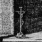

 This section is a self-contained summary of the concepts and systematic organising principles used by Inform to present the illusion of describing a physically real environment, with which the protagonist of a game interacts. All details of implementation are ignored and Inform jargon is either avoided or explained. While many of the rules are standard to all world models used for interactive fiction, some are not, and the footnotes remark on some of the more interesting cases. The next section, §25, buries itself back into implementation to discuss how to add new rules or to change those rules below which you don't agree with. The description below is arranged as follows: ¶1. Substance; ¶2. Containment; ¶3. Space; ¶4. Sense; ¶5. Time; ¶6. Action.
1.1. Objects make up the substance of the world: its places and their contents, abstract relations between these, transient states the world can be in, actors and trends (such as the flowing of a river).
1.2. At any given time, every object in the world model is one and only one of the following kinds: the player; a room; the darkness object; an item; the compass object; a compass direction; or something which is out of play.1
1.2.1. The player object represents the protagonist of the game.
1.2.2. A room represents some region of space, not necessarily with walls or indoors.
1.2.3. The darkness pseudo-room represents the experience of being in a dark place, and has no specific location in space.
1.2.4. An item represents some body (or group of similar bodies) with a definite spatial position at any given time. It is not necessarily solid but its substance is indivisible.
1.2.5. The compass pseudo-item represents the frame of reference within the protagonist's head, and is not an actual compass with its attendant hazards of being dropped, broken, stolen or becoming invisible in pitch darkness.
1.2.6. A compass direction represents a potential direction of movement, such as “northeast”, “down”, “in” or “starboard”.
1.2.7. Objects out of play represent nothing in the model world and the protagonist does not interact with them. Out of play objects are mostly things which once existed within the model world but which were destroyed, or which have not yet been brought into being.
1.2.8. An object can change its kind as the game progresses: for instance a compass direction can be taken out of play, and certain items can become the player, making the object which was previously the player now merely an item.
1.3. Objects are indivisible even if the player may see internal structure to them, such as the four legs which are part of a chair. Pieces of objects only appear in the model if additional objects are provided for them.2
1.4. Objects have internal states and are therefore distinguishable from each other by more than their position in the containment tree. Some are “open”, some are “concealed” and so on, and they are given descriptions and other specifications by the designer.
1.4.1. Some objects are “switchable” between two mutually exclusive states, “on” and “off”. These represent machines, trapdoors and the like, which behave differently when set to when unset, and which generally have rules about the process of setting and unsetting.
1.4.2. Some objects are “lockable” and someone with the specified “key” object can switch between mutually exclusive states, “locked” and “unlocked”. These objects represent containers and doors with locks.
1.4.3. Some objects are “openable” and therefore in one of two mutually exclusive states, “open” and “closed”. If such an object is closed and also locked then it cannot be opened. These objects represent containers and doors.
2.1. Some objects are contained within other objects in what is sometimes called a tree, meaning that: (i) an object can either be contained in one other object (called its “parent”), or not contained in any; (ii) there is no “loop” of objects such that each is contained in the next and the last is contained in the first. The pattern of containment changes frequently during play but (i) and (ii) always hold.3
2.1.1. The objects contained within something are kept in order of how long they have been there. The first possession (sometimes called the “child”) is the one most recently arrived, and the last is the one which has been contained for longest.
2.1.2. In some games there are objects called “floating objects” which represent something found in many locations, such as a stream flowing through the map, or a pervasive cloud. These give the appearance of violating rule ¶2.1, but do not: the effect is an illusion brought about by making the floating object belong at all times to the same room as the player.
2.2. The following rules remain true at all times:
2.2.1. A room is not contained.
2.2.2. The darkness object and the compass are not contained.
2.2.3. A compass direction is contained in the compass object but itself contains nothing.
2.2.4. An item is always contained; either in the player, in another item or a room.
2.2.5. The player is always contained in a visitable object. An object is “visitable” if either (a) it is a room, or (b) it is enterable and it has a visitable parent.
2.2.6. An object out of play is either contained in another object out of play, or else not contained at all.4
2.3. Containment models a number of subtly different kinds of belonging:
2.3.1. The contents of a room object are near each other (usually within sight and touch) in the space represented by the room. For instance, the player, a wooden door and a table might all be contained in a room representing the inside of a small hut.5
2.3.2. The contents of the compass are the compass directions available in principle to an actor. If “north” is removed from the compass, then north becomes meaningless even if an actor is in a room with a north exit; if “aft” is added, then it need not follow that any room actually has an exit leading aft.
2.3.3. The contents of the player fall into two categories: those which are “worn”, and the rest.
2.3.3.1. Worn objects represent clothing or accessories held onto the body without the need for hands, such as a belt or a rucksack.
2.3.3.2. The rest represent items being held in the player's hands.
2.3.4. The contents of an item model different kinds of belonging, depending on the nature of the item:6
2.3.4.1. Some items are “containers”: they represent boxes, bottles, bags, holes in the wall and so on. The contents of a container are considered to be physically inside it. At any given time a container can be “open” or “closed”.
2.3.4.2. Some items are “supporters”: they represent tables, plinths, beds and so on. The contents of a supporter are considered to be physically on top of it.
2.3.4.3. Some items are “animate”: they represent people, sentient creatures generally and higher animals. The contents of an animate object are considered to be carried by it.
2.3.4.4. Some items are “enterable”, meaning that it is possible for the player to be contained within them. A large tea-chest might be an enterable container; a bed might be an enterable supporter. In the case of an enterable which is neither container nor supporter, and which contains the player, the player is considered to be confined close to the enterable: for instance, by a pair of manacles.
2.3.4.5. Failing this, the contents of an item represent pieces or components of it, such as a lever attached to machinery, or a slot cut into a slab of masonry.
3.1. Spatial arrangement on the small scale (at ranges of a few moments' walking distance or less) is modelled by considering some objects to lie close together and others to lie far apart.
3.1.1. Objects ultimately contained in the same room are considered to be close enough together that walking between the two is a largely unconscious act.
3.1.1.1. The model takes no account of directions from one such object to another, except as described in ¶2.3.4 above (e.g., that contents of a supporter are on top of it).
3.1.1.2. All objects with the same parent are considered to be equidistant from, and to have equal access to, each other.7
3.1.2. Objects ultimately contained in different rooms are considered to be so far apart that they will not ordinarily interact. Because of this the model takes no account of one being further away than another.8
3.2. Spatial arrangement on the large scale (at ranges of an appreciable walking distance or more) is modelled by joining rooms together at their edges, much as a patchwork quilt is made.
3.2.1. Rooms joined together represent areas which are adjacent in that they are separated by so short a walk that the walker does not have opportunity to think twice and turn back, or to stop halfway and do something else.
3.2.2. Rooms are joined either by a map connection or a door.9
3.2.2.1. Map connections come in different kinds, representing different directions in the geography of the world. These physical directions are north, south, east, west, northeast, northwest, southeast, southwest, up, down, in and out.
3.2.2.2. Each compass direction corresponds to a single physical direction at any given moment, and this represents the actual direction which a player will walk in if he tries to walk in a given direction within his own frame of reference.10
3.2.2.3. A “door” is an item representing something which comes between two locations, which must be passed through or by in order to go from one to the other, and which it requires some conscious decision to use.11
3.2.2.4. As with a compass direction, a door corresponds to a single physical direction at any given moment.
4.1. The senses are used in the world model primarily to determine whether the player can, or cannot, interact with a nearby object. Three different kinds of accessibility are modelled: touch, sight and awareness.12
4.2. Awareness = sight + touch, that is, the player is aware of something if it can be seen or touched.13
4.2.1. Awareness represents the scope of the player's ability to interact with the world in a single action. Although the player may pursue a grand strategy, he must do so by a series of tactical moves each within the scope of awareness.14
4.3. There are only two strengths of light: good enough to read by and pitch blackness, which we shall call “light” and “dark”.
4.3.1. Some containers and other items are specified as being transparent to light, meaning that light can pass through from what contains them to what they contain (for instance a glass box or a machine whose contents are the buttons on the its front panel), while others are opaque (for instance a wooden box or a spy who keeps all her belongings concealed).
4.3.2. An object is called “see-through” if it is transparent, or if it is a supporter, or if it is an open container, or if it is the player.
4.3.3. Some rooms are specified by the designer as having ambient light (those representing outdoor locations, caves with fluorescent ore formations, strip-lit office buildings and the like); some items are specified as giving off light (those representing torches, lanterns and the like). The room or item is said to be “lit”.
4.3.4. There is light for the player to see by only if there is a lit object, close to the player in the sense of ¶3, such that every object between them is see-through. (For instance, if a player is in a sealed glass box in a cupboard which also contains a key, the glass box comes between player and key, but the cupboard does not.)15
4.4. What the player can touch depends on whether there is light.
4.4.1. In the light, the player can touch anything close to the player provided that (a) every object between them is see-through and (b) none of the objects between them is a closed container.
4.4.2. In the dark, the player can touch (a) anything contained in the player and (b) the enterable object which the player is contained in (if any).16
4.5. What the player can see also depends on whether there is light, but also on whether the designer has specified that any nearby items are “concealed”, which models their being hidden from view. Concealed objects remain touchable but you would need to know they were there, since sight alone would not reveal this. On once being picked up, a concealed object ceases to be concealed.
4.5.1. In the light, the player can see any non-concealed object close to the player provided that (a) every object between them is see-through and (b) none of the objects between them is concealed.
4.5.2. In the dark, the player can see nothing.
5.1. The passage of time is represented by describing and changing the model world at regular intervals, each cycle being called a “turn”. The interval from one such moment to the next is considered to be the time occupied by carrying out these changes, so that all basic changes (i.e., actions: see ¶6) consume the same unit of time.
5.2. Changes in the model world are carried out by a number of independent processes called “daemons”. Some daemons are built in and others added by the designer of a particular game, conventionally by associating them with certain objects over which they have sway. A turn consists of the daemons being invoked one at a time until each has been given the chance to intervene, or to decline to intervene.
5.2.1. Daemons are invoked in the sequence: action daemon, any designed daemons (in no particular order), each-turn daemon, scoring daemon, clock daemon.
5.2.2. Daemons have the opportunity to carry out arbitrary changes to the state of the objects, but should be designed to violate the rules of the model world as little as possible. The built-in daemons do not violate them at all.
5.2.3. Certain designed daemons are “timers”, meaning that they are set to decline to intervene for a set number of turns and will then act once and once only (unless or until reset).
5.3. The action daemon consults the player at the keyboard by asking which action should be performed and then performing it. (See ¶6.) The action daemon is invoked first in each turn.
5.4. The each-turn daemon polls any object of which the player is aware. If it has been specified by the designer as having an each-turn rule, then that rule is applied.
5.5. The scoring daemon keeps track of the length of the game so far by keeping count of the number of turns. It also measures the player's progress by keeping score:
5.5.1. Points are awarded if the player is for the first time carrying an item which the designer has marked as “scored”.
5.5.2. Also if the player is for the first time inside a room which the designer has marked as “scored”, provided there is light to see by.
5.5.3. The library groups score ranges into ranks, with names such as “Beginner” or “Expert” specified by the designer. If this feature is used at all then every possible score should correspond to one and only one rank.
5.6. The clock daemon records the time of day to the nearest minute. (Day, month and year are not modelled.)
5.6.1. Between one change of state and the next, the clock is normally advanced by one minute, but the designer (not the player) can arrange for this to be varied in play either to several changes per minute, or several minutes per change.
5.6.2. The designer can also change the time at any point.
5.6.3. Time passes at a constant rate for all objects, so that the player's measurement of the passage of time is the same as everybody else's.17
5.7. Time stops immediately when any daemon declares the player's death or victory.
5.7.1. Only rules provided by the designer will do this: the model world's normal rules are set up so that, whatever the player asks to do, time will continue indefinitely.18
6.1. An action is a single impulse by the player to do something, which if feasible would take sufficiently little time to carry out that there would be no opportunity to change one's mind half-way or leave it only partly carried out.
6.1.1. An action “succeeds” if the activity in question does take place within the model world. If not, it “fails”.19
6.1.2. Not all impulses are sensible or feasible. Some actions fail because circumstances happen to frustrate them, but others could never have succeeded in any circumstances.
6.1.3. Some actions (the so-called “group 3 actions”) have a model in which, once the impulse is verified as being feasible, all that happens is that a message along the lines of “nothing much happens” is given.
6.1.4. Some actions imply the need for other actions to take place first. In such cases the first action is tried, and only if this is successful will the second action be tried.
6.1.4.1. An action which requires an object to be held (such as eating) will cause a take action for that object.
6.1.4.2. A particular container, specified by the designer as the “sack object”, is such that when the player is carrying the maximum legal number of items, any further take action causes the least recently taken item to be put into the sack first.20
6.1.4.3. A drop action for a piece of clothing being worn will cause a remove-clothing action first.
6.1.5. Other actions are recognised as being composites and so are split into a sequence of simpler constituent actions.
6.1.5.1. Actions involving multiple objects specified by the player as a collective batch (“take six buttons”, “drop all”) are split into one action for each object.
6.1.5.2. Emptying a container is split up into individual remove and drop actions.
6.1.5.3. Entering something which would require intermediate objects to be exited or entered is split into a sequence of exits and entrances.
6.2. An action can involve no objects other than the player, or else one other object of which the player is aware, or else two other objects of which the player is aware.21
6.2.1. The following actions fail if the player cannot touch the object(s) acted on: taking, dropping, removing from a container, putting something on or inside something, entering something, passing through a door, locking and unlocking, switching on or off, opening, closing, wearing or removing clothing, eating, touching, waving something, pulling, pushing or turning, squeezing, throwing, attacking or kissing, searching something.
6.2.2. The following actions fail if the player cannot see the object(s) acted on: examining, searching or looking under something.22
6.3. The actions modelled are grouped under five headings below: actions of sense, alteration, arrangement, movement and communication. There is also one inaction: waiting, in which the player chooses to do nothing for the turn.
6.4. Actions of sense are those which seek information about the world without changing it: inventory, examining, consulting, looking, looking under, searching, listening, tasting, touching and smelling.23
6.4.1. “Look” describes only those parts of the room which can be seen. (In particular, concealed objects are omitted.) In addition, certain objects are “scenery” and are omitted from specific mention in room descriptions because, although visible, they are either too obvious to mention (such as the sky) or are mentioned already in the room-specific text.
6.5. Actions of alteration are those in which the player changes something without moving it: opening, closing, locking, unlocking, switching on and off, wearing and removing clothing, and eating.
6.5.1. A successful eating action results in the object being taken out of play.24
6.6. Actions of arrangement are those in which the player rearranges the spatial arrangement of things: taking, dropping, removing, inserting, putting on top of, transferring, emptying, emptying onto or into, pulling, pushing, turning and throwing.
6.6.1. Pulling, pushing and turning are only minimally provided: they are checked to see if the player can indeed carry out the action, but then nothing happens unless the designer writes code to make it happen, because the model doesn't include directions of pointing.
6.6.2. Actions of arrangement fail if the object is “static”, meaning that it is fixed in place.
6.7. Actions of movement are those in which the player moves about: going, entering, exiting, getting off and pushing something from one room to another.
6.7.1. An attempt to enter a container or door fails if it is not open.
6.7.2. Only an enterable object or a door can be entered.
6.7.3. The player can only get off or exit from the enterable object currently holding him.
6.7.4. Certain enterable objects are “vehicles”. Within a vehicle, movement actions are permitted as if the player were standing on the floor. Otherwise, no movements are permitted if the player is within an enterable object, except to enter or exit.
6.7.4.1. If the player travels in a vehicle, the vehicle object is also moved to the new room, and the player remains within it.
6.7.5. Certain objects are “pushable” and accompany the player on an otherwise normal movement. These, too, move to the new room.
6.7.6. An attempt to move through a concealed door fails as if the door were not there at all.25
6.8. Actions of communication are those in which the player relates to other people within the model world: giving, showing, waking somebody up, attacking, kissing, answering, telling, asking about and asking for something.
6.8.1. Actions of communication fail unless the object is animate, except that certain “talkable” objects can be addressed in conversation.
1 The compass pseudo-item and the darkness pseudo-room are anomalies. The compass arises from a generic convention which is unrealistic but avoids making the game needlessly tiresome: that the player has a perfect inherent sense of direction. The representation of darkness is less defensible. Although vaguely justifiable from the assumption that the experience of being in one entirely dark place is much like another, it came about instead for reasons of implementation: partly to bundle up various darkness-related texts as though they were room descriptions, and partly because early versions of the Inform run-time format (version 3 of the Z-machine) imposed a restriction that the status line displayed above the screen could only be the short name of an object.
2 The atomic theory of matter. Since there are a finite number of atoms each with a finite range of possible states and positions, Heraclitus' doctrine that one cannot stand in the same river twice is false within the model world, and this can detract from its realism. It is sometimes too easy for the protagonist to exactly undo his actions as if they had never been and to return exactly to the world as it was before. Another problem with ¶1.3 is that liquids need to be divisible (“some water” becoming “some water” and “some water”).
3 Infocom world models all included rule (ii) but their implementations made no systematic effort to enforce this, so that Infocom were perpetually fixing bugs arising from putting two containers inside each other.
4 Without knowing the context, and looking at the object tree alone, it isn't easy to distinguish a room from an object out of play, which can make writing good debugging features tricky.
5 This part of the model was invented by the early mainframe ‘Zork’. The Crowther and Woods ‘Advent’, and later the Scott Adams games, required all objects to belong to a room but had a pseudo-room which represented “being carried by the player”. Objects were equated with potential possessions and no object represented the player.
6 The model in ¶2.3.4 has attracted criticism as being simplistic in three respects: (a) an object is assumed not to be both a container and a supporter, so what about an oven?; (b) while the player has a distinction between items worn and items carried, animate objects do not; (c) being inside and being on top of are modelled, but being underneath or behind are not.
7 In ¶4 it will become apparent that a measure of distance between two objects is given by their distance apart in the containment tree.
8 Note that ¶3.1.2 says that objects far apart cannot interact, but ¶3.1.1 does not say that objects close together can do. A honey bee in a sealed hive cannot interact with or be aware of the delivery man carrying the hive to its new beekeeper. Rules on which close objects can interact are the subject of ¶4.
9 There is no requirement for such a join to be usable from the other side.
10 For instance, on board a ship a player may try to walk “starboard”, that being a compass direction, but will in fact move in some physical direction such as northeast. Games have also been designed in which the player's frame of reference consists only of “left”, “right”, “forward”, “back”, “up” and “down”, whose assignment to physical directions changes continuously in play.
11 Thus a vault door, a plank bridge or a ventilation duct high on one wall would be represented by doors, but an open passageway or a never-locked and familiar door within a house would instead be represented by map connections.
12 Hearing, taste and smell are not modelled: instead Inform's implementation provides convenient verbs and actions for designers to add their own ad-hoc rules.
13 Awareness = sense is a strongly restrictive position. Thanks to simplistic parsers, in some early games the player is somehow aware of all objects everywhere, even those not yet encountered. In some more modern games awareness = sense + recent memory. For instance an item dropped in a dark room can be picked up again, since it is assumed that the player can remember where it is.
14 The Inform parser enforces this by recognising only those typed commands which request interaction with objects the player is aware of at a given time.
15 This definition is not as realistic as it looks. Translucency is equated with transparency, presenting problems for glazed glass jars. “Close to the player” implies that light never spills over from one room to another, for instance through an open window on a sunny day.
16 Equivalently, in the dark you can touch exactly those objects adjacent to you in the containment tree. Thus anything which can be touched in the dark can also be touched in the light but not vice versa.
17 This is a restriction, though not because it ignores relativistic effects (at walking speeds these are of the order of 1 part in 1017). Suppose the player enters a room where time runs slow and all actions take five times longer than they would elsewhere. This means that daemons which handle changes far away from the player also run five times slower than normal, relative to the model world's clock.
18 Thus victory does not occur automatically when all scored objects are found and all scored rooms visited; death does not occur automatically when the player crosses from a dark room to another dark room, and so on.
19 It does not necessarily follow that any objects will change their states: an action to look under something will result only in text being printed out, but this is successful because the looking under has become part of the history of the model world.
20 Casual assumptions, in this case that all games have a single rucksack-like ontainer, often make world models needlessly restrictive. Compare the Scott Adams ame engine, in which one object is designated as “the lamp”.
21 The Inform parser will not generate actions concerning objects of which the player is unaware.
22 Thus there is only one action requiring you to both see and touch the object acted on: searching.
23 Reading is not distinguished from examining: instead the consult action provides for looking things up in books.
24 This is the only circumstance in which the rules for the model world destroy an object.
25 I have no idea what this is doing in the Inform world model, but it seems to be there: perhaps the writing-room puzzle in the ‘Curses’ attic needed it. Andrew Plotkin: “I've always said that the definition of concealed was ad-hoc and not well understood by anybody.”